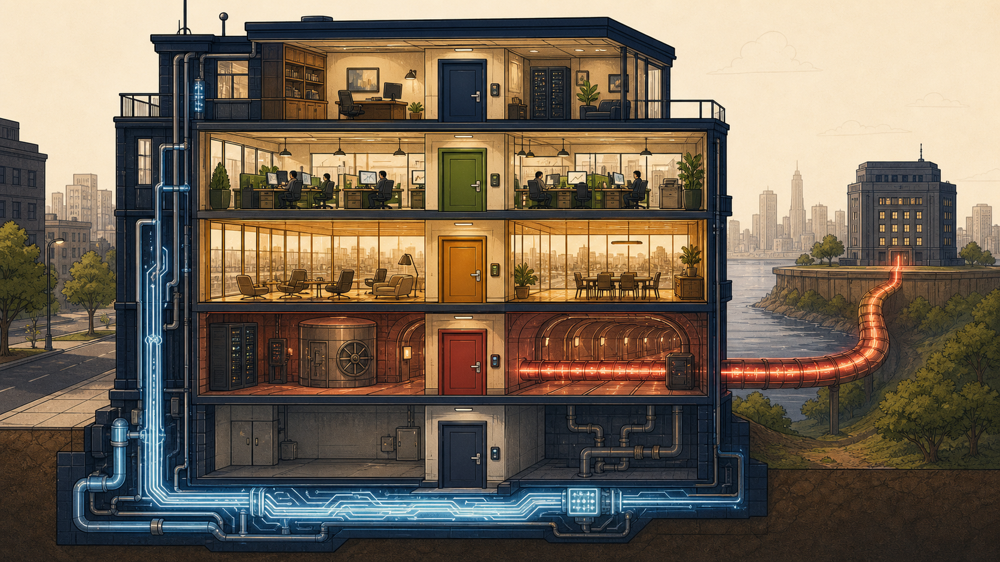
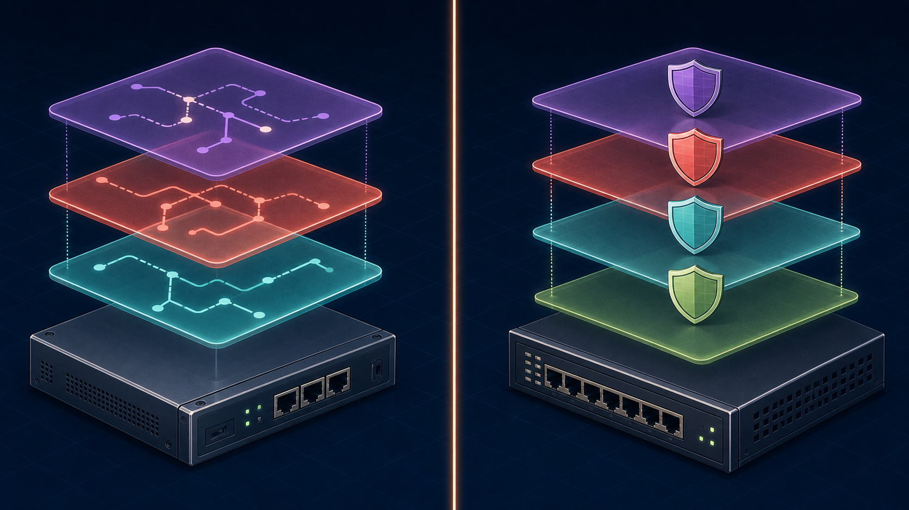
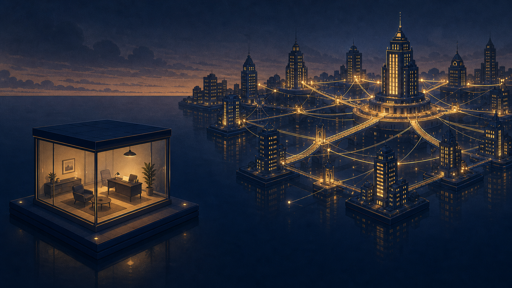

The Cutaway View — One FortiGate, Multiple VDOMs
Think of the FortiGate chassis as an apartment building. The building itself — foundation, plumbing, electrical — is Global VDOM territory: shared infrastructure, managed by one super-admin superintendent. Each floor is a separate VDOM: its own locked door, its own lease (policy set), its own furniture (interfaces and security profiles) — fully isolated from the floor next door, even though they share the same building.
Image Placeholder 1 — The Building Analogy

A detailed architectural cutaway illustration of a modern apartment building rendered as a metaphor for a network firewall appliance. The building's shared foundation, plumbing, and electrical systems are glowing pale blue and labeled subtly with tiny circuit-board patterns, representing shared physical hardware. The building has five visible floors: a small penthouse-style "superintendent's office" floor at the very top representing device-wide administration, and four distinct apartment floors below it, each with a different colored front door and different interior furniture style — one floor styled as a bustling corporate office (green), one floor styled as a transparent glass-walled room where you can see straight through to the street outside (amber, representing invisibility), one floor styled as a secure tunnel/vault connecting via a glowing cable to a distant building on the horizon (red), and one small utility floor with minimal furniture and a single keycard reader on the door. Isometric technical illustration style, clean vector linework, warm parchment and deep navy color palette, educational textbook illustration quality, no text or labels in the image itself.
Image Placeholder 2 — VRF-to-VDOM Analogy Bridge

A split-screen conceptual illustration, left half and right half divided by a thin glowing vertical line down the center. Left half: a single physical network router rendered as a solid metallic device, with three translucent overlapping colored layers floating above it representing independent virtual routing tables (VRF), each layer a different soft color (teal, coral, lavender) with tiny abstract route-path lines inside each layer, none of the layers touching or overlapping in content. Right half: a single physical firewall appliance rendered in the same solid metallic style, with four translucent overlapping colored layers floating above it representing independent VDOMs, matching color families to echo the same "independent layers on shared hardware" idea but styled as small shield icons instead of route-path lines. Both halves rendered in the same isometric technical-illustration style, minimal color palette, no readable text, emphasizing visual symmetry between the two concepts to reinforce the analogy.
Image Placeholder 3 — The Guest VDOM Isolation (Session 7 Teaser)

A minimalist architectural illustration of a small isolated glass room floating on its own separate platform, completely disconnected from a larger connected cityscape of glowing towers and bridges in the background. The isolated room has warm interior lighting and simple furniture, but no visible bridge, cable, or path connects it to anything else in the scene — emphasizing complete, almost eerie isolation despite proximity. The connected cityscape in the background shows towers linked by many glowing bridges and cables to a central hub tower. Muted evening color palette of deep navy, warm amber window lights, and soft parchment tones, wide cinematic composition, no text, subtle sense of narrative tension (isolation vs. connection) appropriate for a "teaser" illustration.
Why This Style
VDOMs are fundamentally about shared-vs-isolated resources on one physical device — a spatial, structural concept, not a sequential process. The apartment-building cutaway makes the "shared foundation, isolated floors" relationship immediately legible without needing box-and-arrow network diagrams, which tend to make VDOMs look like separate physical devices (the exact misconception this session was built to correct). The VRF-to-VDOM split screen directly reinforces the analogy the student generated himself, cementing it as a durable mental anchor.